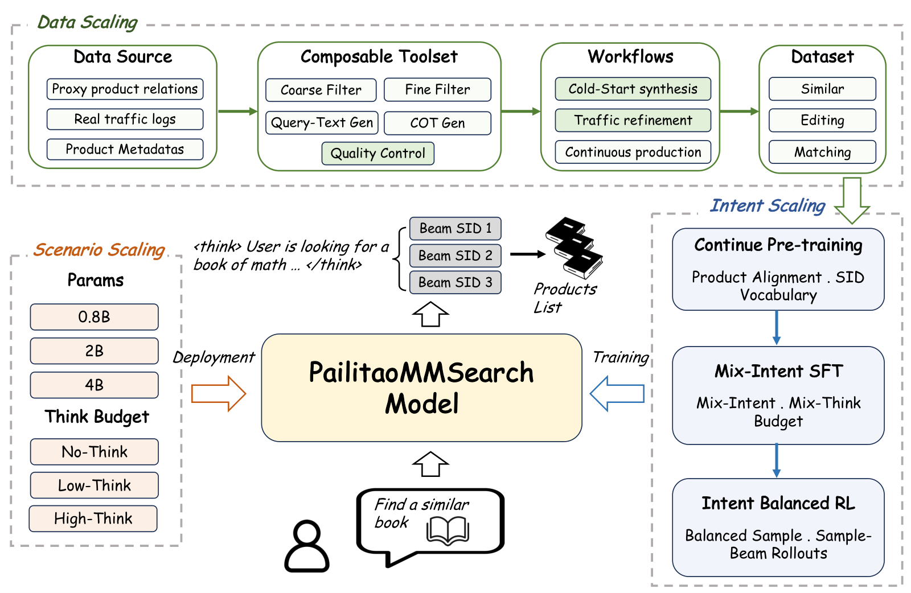
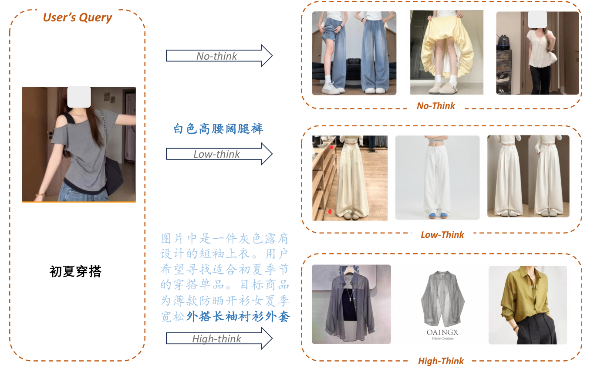

SHARE
In Taobao's Pailitao, a user photographs a shirt and types "find sports shorts to match it". What they want is not the same item but a complementary item from another category. Another user photographs a pair of sandals and says "the women's version from this brand": change one attribute, keep the rest. The traditional approach first runs an intent classifier to decide what kind of request this is, then dispatches it to different retrieval channels, and any mistake along the way breaks the final result. This Alibaba technical report hands all of it to a single 2B vision-language model: it takes the raw image and the raw instruction and directly generates product Semantic IDs (SIDs), with no intent label. Offline, the excellent rate (ER) on "find a match" requests rises from 44.2% for the internal multi-channel pipeline to 74.3%, and average response time falls from 780 ms to 278 ms. In an online A/B test, transactions rose 27.04% and GMV 8.94%, and the system is fully rolled out.
Teams working on multimodal search or generative retrieval should read it, because it answers a very practical question: can one model handle "find the same", "change an attribute" and "find a match" at once, and be reused across entry points with different resource budgets? The most reusable piece is Sample–Beam. During RL rollouts the reasoning part is sampled as usual, but the product-ID part uses the same beam search as production, so training optimizes the candidate list that is actually returned online. On top of standard RL, this step adds 2.30 points of macro excellent rate. Two caveats: it is still weaker than the existing multi-channel pipeline on "find the same" and "change an attribute", and online its results are interleaved with the old pipeline's results and evaluated together.
What problem is it solving?
Consider three requests (illustrative):
| User uploads | User types | Relation wanted | Expected result |
|---|---|---|---|
| A white shirt | Find sports shorts to match it | Matching (different category) | Sports shorts |
| A pair of sandals | The women's version from this brand | Editing (keep brand) | Women's sandals of the same brand |
| A red short-sleeve shirt | A long-sleeve one in the same color | Editing (keep color and category) | Red long-sleeve shirt |
All three share the same input form, an image plus a sentence, but they ask for different retrieval relations. The paper groups them into three types: similar (mostly keep the pictured product), editing (keep the product identity, change or filter some attributes) and matching (find a complementary product).
The old systems suffer from three kinds of binding. First, supervision is bound to an existing entry point: before a new intent launches there are no click logs to learn from. Second, one model learns one relation, so supporting a new relation means adding a classifier, a routing rule or another expert model, and a wrong classification propagates all the way into the final result. Third, model size and decoding are fixed for one entry point's latency target and must be redone for another.
The paper's internal baseline has exactly this structure: an explicit intent classifier decides which retrieval channels to open, including composed image retrieval, multimodal rewriting followed by text search, and semantic matching between query text and product titles. The merged candidates then pass through several ranking stages. Its excellent rate on matching requests is only 44.2%, well below the other two types, because "find a match" is hard to retrieve by similarity.
The overall pipeline: data, intent, scenario

The pipeline is easiest to read by what each stage produces:
| Stage | What it does | Output |
|---|---|---|
| Data scaling | Five composable data tools build "image + instruction → target product" samples from product relations or real traffic | Training data for three intents |
| Continual pre-training | Trains on e-commerce tasks such as title understanding, SID prediction and attribute prediction | An initial model that knows products and the SID vocabulary |
| Mixed-budget SFT | Trains all three intents together and teaches three reasoning lengths | One model that switches reasoning length by prompt |
| Unified RL | Samples by intent weight, generates candidates with Sample–Beam and scores them | The final retrieval model |
| Scenario deployment | Picks one of 0.8B, 2B, 4B and one of three reasoning lengths | An online configuration per entry point |
Each product is represented by a three-level SID with 8,192 codes per level. Every valid decoded SID maps to exactly one product, so decoding is the retrieval itself rather than a query rewrite handed to another retriever. Three reasoning lengths are controlled by the system prompt. No-think emits SIDs directly. Low-think first writes a short note naming only the decisive visual and textual constraints. High-think allows longer reasoning to compare candidates and resolve conflicting constraints.
The key division of labor is that the model infers the intent from the image and the words, while the deployer picks the resource budget through model size and reasoning length. The two do not interfere, so no routing model is needed.
Where does training data for a new intent come from?
Before a new intent launches there is no traffic, so data must be built from existing product relations such as similarity, co-occurrence and outfit compatibility. These proxy relations differ in structure and reliability, so the authors built five tools: coarse filtering, fine filtering, instruction generation, reasoning generation and quality control. The coarse filter drops obviously implausible pairs using cheap signals such as category, attributes and behavior. The fine filter checks whether a pair really expresses the target relation. Instruction generation writes the product relation as something a user would say. Quality control is the final gate.
Walk through the paper's example. The proxy relation is "red short-sleeve shirt → red long-sleeve shirt". The coarse filter sees matching category and dominant color and keeps it. The fine filter outputs a structured judgment: category and color stay fixed, sleeve length is the edit, and other differences must be small. Instruction generation writes only the supported change, "find a long-sleeve one in the same color", rather than describing every attribute of the target. Quality control scores image, instruction and target together from 0 to 3. A red long-sleeve shirt gets 3. One whose sleeves are partly hidden gets 2. A blue long-sleeve shirt violates "same color" and gets 1. A long-sleeve jacket is outside the target category and gets 0. Only scores of 2 or more enter training.
Why order the tools from cheap to expensive? Fine filtering and instruction generation both call a large multimodal model. Cutting the pool with structured signals first means the large model only processes what is left, which lowers cost. Real traffic takes a different path: the user's own words are kept and only repaired when quality control finds a typo or conflicting constraints, so real phrasing is not rewritten beyond recognition.
In terms of scale, proxy data is 24M similar, 24M editing and 12M matching, and cleaned real traffic is 1M, 8M and 1M. Two comparisons matter. Growing the data from 30% to 100% raises macro excellent rate from 46.32% to 49.03%. At full scale, removing real traffic costs 0.78 points, and removing quality control as well costs another 0.28. So data volume is still the biggest lever, real traffic contributes more than quality control, and quality control mainly helps matching.
Sample–Beam: making RL optimize the candidate set actually returned online
This is the core step and the easiest to misread. Start with why it is needed. Standard GRPO samples several complete outputs per query, each generated token by token at random. Production does not work like that: after the model finishes its reasoning, the SID part is produced by beam search of width B, giving B candidates at once. One randomly sampled SID and the top B beams come from different distributions, so what training rewards does not match what serving returns.
Sample–Beam splits a rollout into two parts. For one query it first samples N reasoning segments. Each segment is followed by one beam search that yields B SIDs. A group therefore holds N×B complete trajectories, each "reasoning + one SID". Every valid SID maps deterministically to a catalog item. The reward model scores each branch's candidate for relevance to the query using the corresponding intent-specific rubric. All N×B scores are normalized together to give each trajectory an advantage, and the GRPO clipped objective then updates both reasoning tokens and SID tokens.
A small example shows how the reasoning part gets trained (illustrative, N=2, B=3):
| Reasoning segment | Scores of 3 beam candidates | Advantage after subtracting group mean | Sum of advantages |
|---|---|---|---|
| Reasoning 1: keep red and the shirt category, change only sleeve length | 3, 2, 1 | +1.67, +0.67, −0.33 | +2.0 |
| Reasoning 2: look for a red top | 1, 0, 1 | −0.33, −1.33, −0.33 | −2.0 |
The mean of the six scores is about 1.33 (illustrative; only the mean is subtracted here, the division by standard deviation is omitted). The three candidates after reasoning 1 are better overall, so its advantages sum to a positive number and its tokens are pushed up. Reasoning 2 is worse overall and is pushed down. In other words, a reasoning segment is judged by the whole set of candidates it leads to, not by one randomly sampled SID, which matches what users see online: a whole list of products.
The authors also state the cost. Beam search picks the top B deterministically rather than sampling from the policy, so this objective is not an unbiased on-policy estimate. What it buys is alignment between training and serving, not a more accurate gradient.
The other design is intent-weighted sampling. The three intents differ greatly in data volume, and sampling by raw proportion would let the largest intent dominate updates, so each intent gets a sampling weight. All three share one model. The intent label only decides sampling proportion and the scoring rubric, and never enters online inference.
| Training setting | Similar ER | Editing ER | Matching ER | Macro ER |
|---|---|---|---|---|
| SFT | 45.56% | 35.43% | 66.09% | 49.03% |
| Standard RL | 46.79% | 37.37% | 73.93% | 52.70% |
| Sample–Beam RL | 49.65% | 40.48% | 74.88% | 55.00% |
Standard RL helps matching most, by 7.84 points. Sample–Beam then adds about 3 points each to similar and editing, and only 0.95 to matching. The authors attribute gains to unified RL. Sample–Beam uses serving-time beam decoding to generate candidates during training, providing complementary gains. Its additional gains are concentrated on similar and editing retrieval.
How to pick reasoning length and model size

| Model | Reasoning length | Macro ER | Avg. reasoning tokens | Response time (ms) |
|---|---|---|---|---|
| 0.8B | No-think | 50.78% | 0 | 136 |
| 0.8B | High-think | 49.60% | 51.7 | 326 |
| 2B | No-think | 54.62% | 0 | 210 |
| 2B | Low-think | 55.13% | 8.6 | 278 |
| 4B | High-think | 55.41% | 54.99 | 1,133 |
The table says three things. In this experiment, adding reasoning to the 0.8B model lowers macro ER and increases latency. The 2B Low-think writes only 8.6 tokens on average yet beats No-think by 0.51 points, which means the useful "reasoning" here is a one-line constraint extraction such as "keep the color, change the sleeves", not a long chain of thought. The 4B with High-think reaches the table's best 55.41%, but takes more than four times as long as 2B Low-think for 0.28 more points. That is why the authors chose 2B Low-think as the main configuration.
Against existing systems, and online results
| System | Similar ER | Editing ER | Matching ER | Macro ER | Avg. response time (ms) |
|---|---|---|---|---|---|
| Internal multi-channel retrieval and ranking pipeline | 54.1% | 50.1% | 44.2% | 49.5% | 780 |
| Qwen3.8-Flash-Next rewrite + full-text retrieval | 47.5% | 47.9% | 61.1% | 52.2% | 1,075 |
| This paper, 2B Low-think | 50.5% | 40.6% | 74.3% | 55.1% | 278 |
Excellent rate (ER) here is the share of the top 10 results that receive the full score of 3, judged by a multimodal evaluator calibrated on human labels. When it assigns a 3, it agrees with humans about 93.6% to 93.9% of the time. Macro is the plain average over the three intents.
The result is not a clean sweep. The 2B model's macro ER beats the internal pipeline by 5.6 points, almost all of it from 30.1 points on matching. On editing it is 9.5 points lower, and on similar 3.6 points lower. This shows that generative retrieval is strong at understanding relations but still weak at preserving exact attributes, while the internal pipeline, with its multiple ranking stages, is steadier on fine-grained attributes.
Each online test took about 10% of traffic for about 14 days. In Pailitao's "Multimodal Search" entry, item page views rose 17.90%, transactions 27.04%, GMV 8.94% and CTR 0.58 percentage points, all significant. However, in entry points that already had a mature pipeline, the new model's results were interleaved with the old pipeline's at the final display stage, so the online numbers measure "new model plus old pipeline" as a whole, not the new model as a standalone replacement.
Limitations as I see them
First, the evaluator, quality control and reward all come from the same model family. Quality control uses Qwen3.5-397B, the reward model is Qwen3.8-27B, and the offline judge is also a model. The authors admit their errors may be correlated. Judge precision is about 93%, while Sample–Beam's gain over standard RL is 2.30 points; the two are of similar magnitude, so some "learning to please the judge" cannot be fully ruled out.
Second, the test set is small. The automatic test sets for the three intents hold only a few hundred queries each, and the smallest, matching, has 371. With so few samples, differences of a few tenths of a point in the reasoning-length table may be noise; for example 2B Low-think and High-think differ by only 0.13 points, which is not enough to say which is better.
Third, it does not show that the model can replace the old pipeline on its own. Editing ER is 9.5 points below the internal pipeline, and the online test interleaves results. The more accurate conclusion is that it is well suited to fill the old pipeline's weakest spot, "find a match", while there is no evidence yet that it can carry all traffic alone.
How a recommendation or search team could try it
- Find the weakest relation in your current multi-channel retrieval (often matching or cross-category), train a small generative retrieval model only for it, and A/B test it interleaved with the old pipeline. This has the least risk and makes gains easiest to see.
- Build training data from existing product relations first, ordered as cheap-signal coarse filtering, large-model fine filtering, large-model quality control. Calibrate the quality rubric with a few thousand human labels and check whether agreement reaches 90% or more.
- Use Sample–Beam directly in RL: if production uses beam search to return several candidates, use beam search to generate SIDs during training too. Score each candidate separately, normalize rewards across all branches, and then update reasoning and SID tokens. Judge success by whether human satisfaction with the top few candidates improves, not only by the judge's score.
- Start with the shortest, constraint-extraction style reasoning. If reasoning hurts a small model, turn it off and spend the latency budget on a larger model instead.
Bottom line
Let the model infer the intent, let the deployer choose the budget, and use Sample–Beam so that RL optimizes the candidate set actually returned online: this is a multimodal generative retrieval recipe that can be reused across entry points.
| Dimension | Assessment |
|---|---|
| Problem importance | High. Open-ended image-plus-text shopping search is becoming a mainstream entry point, and multi-intent routing is a major maintenance cost of old pipelines |
| Method novelty | Medium. Most parts combine existing techniques; Sample–Beam is the most novel and most reusable piece |
| Experimental evidence | Medium-high. Complete ablations and a full online rollout, but judge and reward share a family, the test set is small and online results are interleaved |
| Engineering cost | High. Needs a data production pipeline at tens of millions of samples, continual pre-training and an RL framework with beam rollouts |
| Worth trying? | Yes, especially to cover the old pipeline's weakness on matching requests; Sample–Beam transfers on its own to any generative retrieval that returns candidates via beam |
How did this read for you?
Hoot made a note. Thanks for the feedback.
One tap, no sign-in; tap again to undo. Only anonymous counts are kept, never who you are.
Discussion
Add experiment details, reproduction notes or a different take. Requires a GitHub sign-in.
Loading the discussion…